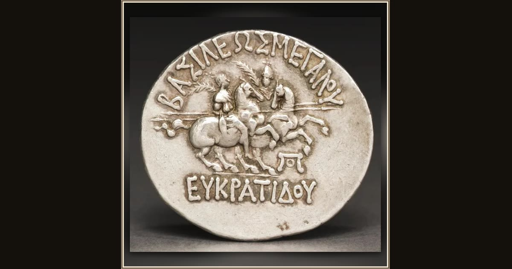

Coin of Eukratides I
Afghanistan, Bactria, Eucratides I (171–145 BCE) · 170–145 BCE · cma
Two horsemen ride side by side on a silver coin of Eukratides I; Castor and Polydeuces announce themselves to Orestes after their sister's death (1240–42). Explore its place in Euripides's Plays, Electra, line 1256.